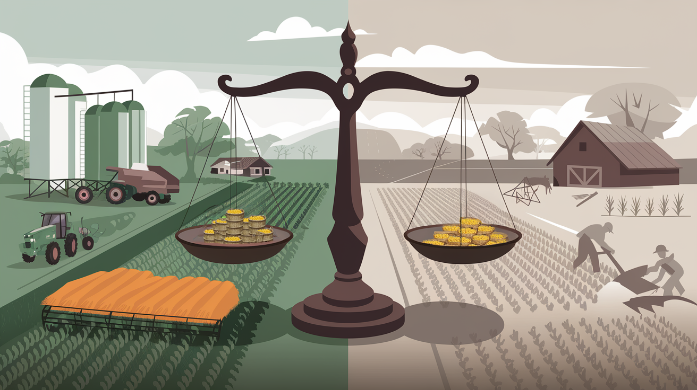

TL;DR: We need 50% more food by 2050, but we already use 65% of Earth’s farmable land. The solution isn’t choosing between industrial or traditional farming - we should measure and optimize their tradeoffs.

People love simple narratives when it comes to many of today’s complex issues. In the case of modern agriculture, the narrative is anti-establishment: Factory farms are evil, small organic farms are good, industrial agriculture destroys nature, and regenerative agriculture saves it. However, as Michael Grunwald argues in his rec ent New York Times essay , the reality is far more complex—and the tradeoffs far more nuanced than most of us realize.
Let’s start with some uncomfortable math: By 2050, we’ll need about 50% more calories to feed a population projected to approach 10 billion. Meanwhile, looking at Earth’s potentially usable land (excluding deserts, mountains, and ice caps), agriculture already occupies about 65% of what’s available. To put this in perspective, of all the land on Earth where we could grow food today, nearly two-thirds is already used for farming and grazing. And it’s not evenly distributed – only about a third of agricultural land is used for growing crops, while the remaining two-thirds is dedicated to pasture for livestock.
This space crunch is at the heart of Grunwald’s argument. Something has to give if we need to produce 50% more food and already use 65% of usable land. We can’t simply expand our way out of this problem by converting more wilderness to farmland. There isn’t enough suitable land left, and what remains is often crucial for biodiversity and carbon sequestration.
The responses to Grunwald’s piece – five “Letters to the Editor” published last weekend in the Times – illustrate how challenging these tradeoffs are. [For my younger readers, this is an outdated form of communication, like commenting on a social media post, with the upside that the comments are curated but are buried in the text several weeks after the original.] Each letter cites anecdotal concerns: animal welfare, rural community health, soil degradation, worker safety, and environmental impact. But here’s where things get interesting: these aren’t competing priorities. They’re interconnected aspects of a system we need to optimize holistically.
Consider the efficiency argument. Since 1994, Steve Gabel, a Colorado feedlot operator featured in Grunwald’s piece, has reduced the amount of feed needed per pound of beef by a third, which is objectively good for land use and emissions. But does this efficiency come at the cost of animal welfare? Not necessarily—stressed or poorly treated animals gain weight more slowly, making them less efficient to raise. The real question isn’t “Do you prefer food from a factory or a family farm?” but “How do we optimize for multiple variables simultaneously?”
This is where quantification becomes crucial. When we say “industrial agriculture does more harm,” we need to ask: compared to what? Per calorie produced? Per acre? Per dollar of economic value? Different metrics tell different stories. A small organic farm might have a lower environmental impact per acre but a higher impact per pound of food produced. Both measurements matter.
Some key tradeoffs we need to consider, quantitatively:
-
Land use vs. intensity of use : Concentrated animal feeding operations (CAFOs) use less land than grass-fed operations but concentrate environmental impacts in smaller areas.
-
Efficiency vs. resilience : Monocultures are intrinsically predictable and can be incredibly efficient but are vulnerable to pests and disease.
-
Scale vs. community impact : Larger operations often achieve better environmental efficiency but may negatively impact rural communities.
-
Present vs. future productivity : Some intensive farming practices deliver high yields now but may degrade soil over time.
Instead of asking whether industrial agriculture is good or bad, we should be asking questions like:
-
What mix of farming methods optimizes both production and sustainability?
-
How can we maintain high yields while reducing environmental impact?
-
Where do efficiency gains start to create unacceptable risks or externalities?
-
How can government policies help align economic incentives with environmental and social goals?
The path forward likely involves combining the best aspects of different approaches. For example, we might use precision agriculture and genetic advances to reduce chemical use while adopting regenerative practices where they make sense. We could also maintain the efficiency of large operations while implementing more substantial environmental and welfare standards.
But we can only make these decisions with eyes wide open if we move beyond simplistic good-versus-evil narratives and start seriously engaging with the quantifiable tradeoffs. This means gathering better data, developing more sophisticated metrics for success, and accepting that optimal solutions might not fit our preconceived notions of what “good” farming feels like.
Grunwald concludes by proposing a “vibe shift” in our thinking about farming. He suggests we view all agriculture as a “necessary evil” that should be confined and improved rather than categorizing it as virtuous or villainous. He advocates making industrial agriculture less environmentally damaging while maintaining its productive capacity rather than attempting to replace it with less efficient alternatives.
His verbal opponents include a series of special interest advocates:
-
Anna Lappé , from the Global Alliance for the Future of Food.
-
Britt Groosman , representing the Environmental Defense Fund.
-
Bill Crain, author, and operator of the Safe Haven Farm Sanctuary (not a farm).
-
Daisy Freund , from the ASPCA.
One farmer, Virginia Thomas, also had a letter published. She is co-owner of Clover Mountain Dairy in Chewelah, Washington, where she manages six (6) named cows on a 40-acre grass-fed dairy farm. She cites tradeoffs like food quality, farmer health, rural community well-being, and the interconnected nature of farming with the broader ecosystem. To put her six-cow operation in perspective, there are approximately 257,000 dairy cattle in Washington State, according to the USDA.
The overarching theme across these responses is the tension between efficiency and holistic sustainability in food production. While Grunwald’s original piece emphasized maximizing output, these letters collectively argue for a more nuanced approach that considers multiple factors: environmental impact, animal welfare, community health, food quality, and long-term sustainability.
These are valid considerations, but the future of agriculture isn’t a choice between industrial efficiency and pastoral ideals - it’s about finding measurable, practical ways to combine the best of both. While advocates on each side present compelling narratives, the hard numbers tell us we can’t feed tomorrow’s world with yesterday’s methods alone. The real challenge isn’t choosing sides in an ideological battle but developing metrics that help us understand and optimize these complex tradeoffs. Only then can we move beyond feel-good stories and finger-pointing toward solutions that work at scale. The most sustainable path forward will likely make neither side entirely happy - and that’s probably a good sign we’re getting it right.